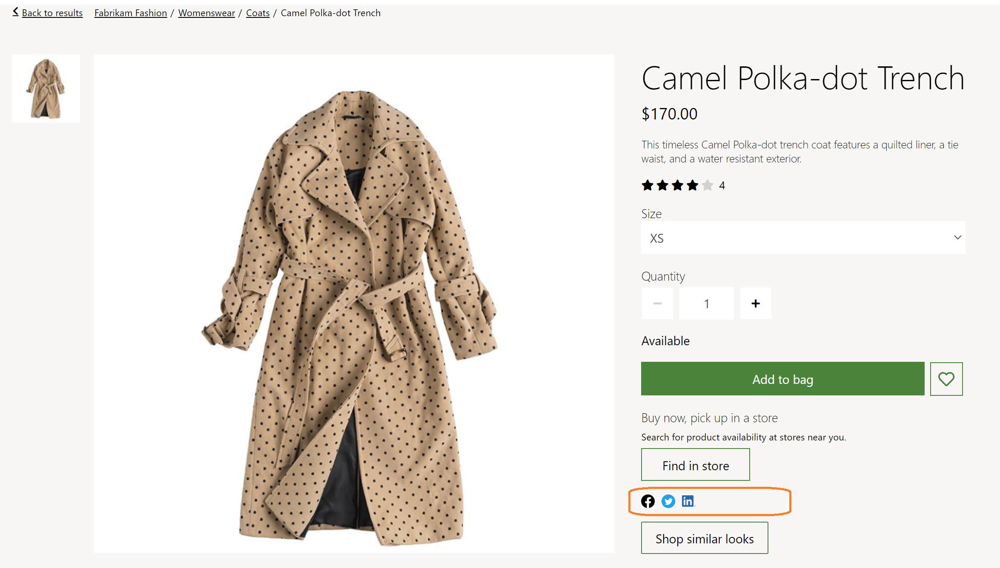

Social share module
This topic covers social share modules and describes how to add them to site pages in Microsoft Dynamics 365 Commerce.
Overview
Social share modules allow users to share e-Commerce site page URLs on social media such as Facebook, Twitter, Pinterest, and LinkedIn. Site page URLs can also be shared via email. Social share modules are commonly used on product details pages (PDPs) to help users share product information.
Each social share module is a container for social share item modules. Each social share item module can be configured to point to a specific social media site. Integration with Facebook, Twitter, Pinterest, LinkedIn, and email is supported out of the box. When a site user selects a social media symbol, an HTML iframe is launched for the respective social media site. Within the iframe, the user can sign in and post the page content that they were viewing.
Each social media platform may track cookies, so this module requires site users to accept the cookie consent notification message. When cookie consent is not accepted, the module will be hidden on the page. For more information, see Cookie compliance.
The following illustration highlights an example of a social share module used on a product details page.

Social share module properties
| Property name | Value | Description |
|---|---|---|
| Caption | Text | This property specifies a caption for the module. |
| Orientation | Horizontal or Vertical | This property defines the layout orientation for the social media items. |
Social share item module properties
| Property name | Value | Description |
|---|---|---|
| Social media | Facebook, Twitter, Pinterest, LinkedIn, Mail | A drop-down menu with a list of social media platforms. |
| Icon | Image | This will be the image that will be shown for the respective social media. As a best practice, refer to the social media platform's SDK for the recommended image to use for each platform. |
Add a social share module to a buy box module
To add a social share module to a buy box module, follow these steps.
- In the Fabrikam site, select Pages, and then select the DefaultPDP page to open the product details page.
- In the Buybox (required) slot, select the ellipsis (...), and then select Add Module.
- In the Add Module dialog box, select the Social Share module, and then select OK.
- In the Social Share slot, select the ellipsis (...), and then select Add Module.
- In the Add Module dialog box, select the SocialShare module, and then select OK.
- In the properties pane of the SocialShare module, under Orientation, select Horizontal. Add a caption as needed.
- In the SocialShare slot, select the ellipsis (...), and then select Add Module.
- In the Add Module dialog box, select the SocialShareItem module, and then select OK.
- In the properties pane of the SocialShareItem module, under Social Media, select Facebook.
- In the properties pane of the SocialShareItem module, under Icon, select + Add an image.
- In the Media Picker dialog box, select the Facebook logo image, and then select OK. If no Facebook logo image is present, select Upload new media item to upload one.
- Add and configure additional SocialShareItem modules as needed.
- Select Save, and then select Preview to preview the page. The page will show the social share module.
- Select Finish editing to check in the page, and then select Publish to publish it.